МИНИСТЕРСТВО ГРАЖДАНСКОЙ АВИАЦИИ
Государственный
проектно-изыскательский
и научно-исследовательский институт
Аэропроект
ПОСОБИЕ
ПО ПРОЕКТИРОВАНИЮ ВЕРТОЛЕТНЫХ СТАНЦИЙ,
ВЕРТОДРОМОВ И ПОСАДОЧНЫХ ПЛОЩАДОК
ДЛЯ ВЕРТОЛЕТОВ ГА
(в развитие СНиП 2.05.08-85)
Часть VII. Вертолетные станции, вертодромы
и посадочные площадки для вертолетов
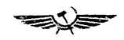
Москва 1984
Изменения внесены в соответствии с Изменениями и дополнениями к данному пособию, связанным с вводом в действие СНиП 2.05.08-85 «Аэродромы», утвержденными 29.04.86.
Настоящее Пособие издается в развитие ВНТП 2-83. С введением его в действие утрачивает силу «Инструкция по проектированию вертолетных станций, вертодромов и посадочных площадок для вертолетов гражданской авиации».
В Пособии приведены методики расчета потребных параметров элементов вертодромов и посадочных площадок для вертолетов. Оно предназначено для проектирования вертодромов и посадочных площадок для конкретных типов вертолетов, а также для оценки эксплуатационной пригодности существующих вертодромов.
Пособие разработали инженеры Е.И. Васильева, В.Г. Гавко, В.А. Шиманский.
Пособие утверждено начальником института 30 сентября 1983 г. со сроком введения 1 июля 1984 г.
1.1. Настоящее Пособие предназначено для проектирования вертолетных станций и вертодромов для конкретного типа вертолетов, а также для эксплуатационной оценки вертодромов и посадочных площадок.
1.2. Пособие не распространяется на проектирование посадочных площадок, расположенных на палубах кораблей, ледоколов и т.д.
1.3. Вертолетная станция - предприятие, осуществляющее регулярный прием и отправку пассажиров, багажа, почты и грузов.
Вертолетная станция может также обеспечивать выполнение народнохозяйственных задач.
1.4. Вертодром - земельный (водный) участок или специально подготовленная площадь (на крыше здания, на приподнятой над водной поверхностью платформе), имеющая комплекс сооружений и оборудования, которые обеспечивают взлет и посадку по-самолетному или по-вертолетному, руление, хранение и обслуживание вертолетов.
1.5. По эксплуатационно-техническому назначению вертолетные станции и вертодромы могут быть базовыми, конечными и промежуточными.
Базовая вертолетная станция (базовый вертодром) имеет приписной вертолетный парк и выполняет техническое обслуживание по оперативным видам работ, предусмотренным регламентом.
Конечная вертолетная станция (конечный вертодром) - пункт окончания полета по заданному маршруту. На конечных вертолетных станциях производится уборка пассажирского салона, техническое обслуживание вертолета, высадка и посадка пассажиров, разгрузка и погрузка грузов, багажа и почты для выполнения обратного рейса.
Промежуточная вертолетная станция (промежуточный вертодром) - пункт краткосрочной остановки вертолета согласно расписанию при выполнении рейса по установленному маршруту. Здесь производится осмотр вертолета и дозаправка топливом.
1.6. По местам расположения вертодромы могут подразделяться на наземные и надводные.
К наземным относятся вертодромы, расположенные на поверхности земли, на крыше здания. Наземные вертодромы могут быть равнинными и горными.
К надводным относятся вертодромы, расположенные на приподнятых над водой платформах, плавучих и прогруженных буровых установках.
1.7. Вертодром постоянный - вертодром, оборудованный для регулярной эксплуатации, зарегистрированный в установленном порядке и имеющий свидетельство о регистрации.
Вертодром временный - вертодром, подготовленный для полетов на ограниченный срок и не требующий регистрации, но подлежащий учету в управлении ГА.
Временный вертодром может состоять только из одной летной полосы.
1.8. Посадочная площадка - земельный участок или специально подготовленная площадь минимально допустимых размеров на каких-либо сооружениях (крыши зданий, надводные платформы и т.д.), обеспечивающая регулярные или эпизодические взлеты и посадки вертолетов без использования влияния воздушной подушки. Посадочные площадки подлежат учету в управлениях ГА.
1.9. Рабочая площадь - участок посадочной площадки, предназначенный для взлета и посадки вертолетов. Рабочая площадь, как правило, имеет искусственное покрытие.
Посадочные площадки, расположенные на крышах зданий, приподнятых платформах, судах и т.д., могут не иметь полос безопасности.
1.10. Швартовочные площадки - специально подготовленные и оборудованные швартовочными креплениями площадки, как правило, с искусственным покрытием, предназначенные для опробования двигателей на максимальных оборотах и для проведения регламентных испытаний.
1.11. Вертолетные станции подразделяются на три класса в зависимости от объема перевозок или годовой интенсивности движения вертолетов:
при годовом объеме перевозок свыше 30 тыс. чел. и интенсивности движения свыше 4000 пос/год - I кл.;
при годовом объеме перевозок свыше 15 тыс. чел. и интенсивности движения свыше 2000 пос/год - II кл.;
при -»- до 15 тыс. чел. и -»- до 2000 пос/год - III кл.
1.12. Вертодромы и посадочные площадки подразделяются на три класса:
I - для эксплуатации вертолетов всех классов:
II - для вертолетов II, III и IV кл.;
III - -»- III и IV кл.
Рис. 1. Примерная схема базовой
вертолетной станции
(базового вертодрома): 1 - служебно-пассажирское
здание; 2 - перрон; 3 - РД; 4 - ЛП; 5 - ВПП; 6
- групповая
МС; 7 - индивидуальные МС; 8 - док технического
обслуживания; 9 - склад ГСМ; 10 - преддоковая
площадка; 11 - швартовочная площадка; 12 -
автодорога; 13 - ограждение; 14 - метеоплощадка; 15 -
привокзальная площадь; 16 - автодорога
2.1. Основными элементами вертодрома являются (рис. 1):
летная полоса (ЛП);
рулежные дорожки (РД);
места стоянки вертолетов (МС);
девиационные площадки;
швартовочные площадки;
преддоковые площадки;
перрон;
площадки мойки вертолетов.
Данные для проектирования вертодромов и посадочных площадок приведены в приложении 1, взаиморасположение основных элементов вертодромов - в приложении 2.
2.2. Летная полоса (ЛП) должна обеспечивать взлет и посадку вертолетов с использованием влияния воздушной подушки, а также по-вертолетному без использования влияния воздушной подушки.
ЛП включает взлетно-посадочную полосу (ВПП), концевые и боковые полосы безопасности (КПБ и БПБ).
2.3. КПБ примыкают к концам ВПП и обеспечивают безопасность взлета и посадки вертолетов. БПБ располагаются по обе стороны ВПП и обеспечивают безопасность вертолетов при возможных выкатываниях за пределы ВПП при взлете и посадке.
2.4. Рулежные дорожки (РД) предназначены для руления и буксировки вертолетов. РД, как правило, соединяют ВПП с местами стоянки вертолетов, перроном (если он имеется). РД связывают между собой МС, швартовочные, преддоковые площадки, площадки устранения девиации и т.д.
2.5. Перрон предназначен для обеспечения кратковременной стоянки вертолетов при посадке и высадке пассажиров (если на вертодроме осуществляются пассажирские перевозки).
2.6. Места стоянки вертолетов (МС) предназначены для обеспечения хранения и обслуживания вертолетов. На МС может производиться погрузка и разгрузка почты, грузов, посадка и высадка пассажиров. МС могут быть групповыми и индивидуальными.
2.7. Швартовочные площадки предназначены для обеспечения опробования двигателей на максимальных оборотах.
2.8. Преддоковые площадки предназначены для проведения технического обслуживания и доработки после проведения технического обслуживания и текущего ремонта.
2.9. Привертодромная территория предназначена для обеспечения маневрирования вертолетов в воздушном пространстве над прилегающей к вертодрому (посадочной площадке) местностью. Полосы воздушных подходов (ПВП), являющиеся частью привертодромной территории и примыкающие к концам ЛП в направлении продолжения ее оси, обеспечивают набор высоты при взлете и планировании при посадке вертолетов.
3.1. Летные и взлетно-посадочные полосы должны проектироваться с учетом обеспечения возможности взлета, посадки вертолетов с коротким разбегом-пробегом и по-вертолетному с использованием влияния воздушной подушки.
3.2. При проектировании вертодромов рекомендуется обеспечивать взлет вертолета по-самолетному, который является наиболее экономичным по сравнению с вертолетным, так как позволяет увеличить загрузку вертолета. В случае невозможности обеспечения взлета и посадки вертолетов с коротким разбегом-пробегом допускается взлет вертолетов по-вертолетному с использованием влияния воздушной подушки.
При расположении вертодромов в стесненных условиях, на крышах зданий, на приподнятых над водой платформах допускается взлет и посадка вертолетов по-вертолетному без использования влияния воздушной подушки.
3.3. Размеры элементов ЛП и ВПП следует принимать согласно главе СНиП «Аэродромы». В том случае, если заданием на проектирование предусмотрено проектирование вертодрома для эксплуатации конкретного типа вертолета, размеры элементов ЛП и ВПП допускается принимать в соответствии с табл. 1.
3.4. Формы и размеры вертодромов определяются исходя из количества и расположения ЛП. Количество ЛП, их направление и расположение по отношению друг к другу принимаются в зависимости от интенсивности движения вертолетов, ветровой загрузки, препятствий на привертодромной территории, рельефа местности, а также особенностей зимней эксплуатации вертодрома.
3.5. Ветровая загрузка вертодрома должна быть не менее приведенной в табл. 2.
|
Элементы вертодромов |
Размеры элементов по типам вертолетов, м |
||
|
Ми-6, Ми-10, Ми-26 |
Ми-8, Ми-4, Ка-32 |
Ми-2, Ка-26 |
|
|
1 |
2 |
3 |
4 |
|
Длина ЛП |
200 |
120 |
120 |
|
Ширина ЛП |
50 |
50 |
35 |
|
Длина ИВПП |
190 |
110 |
110 |
|
Ширина ИВПП |
20 |
20 |
15 |
|
Ширина БПБ |
15 |
15 |
10 |
|
Длина КПБ |
5 |
5 |
5 |
|
Посадочные площадки |
80×80 |
50×50 |
35×35 |
|
Рабочая площадь посадочных площадок |
20×20 |
20×20 |
15×15 |
|
Полосы безопасности посадочных площадок |
30 |
15 |
10 |
|
Посадочные площадки, расположенные на вершинах гор, седловинах, террасах, с открытыми воздушными подходами в направлении старта |
50×50 |
40×30 |
30×25 |
|
Минимальное превышение посадочной площадки над общим рельефом местности в сторону взлета |
- |
300 |
300 |
|
Минимальное расстояние от посадочной площадки до препятствия в направлении взлета |
50 |
450 |
400 |
|
Посадочные площадки, расположенные на крышах зданий и приподнятых платформах, ограниченные комингсом |
35×28 |
21×17 |
15×12 |
Примечание. Параметры элементов ЛП для вертолетов Ми-26 и Ка-32 даны предварительные и будут уточнены по результатам испытаний.
|
Тип вертолета |
Минимальная ветровая загрузка, м/с |
Максимально допустимая скорость нормальной составляющей ветра, м/с |
|
Ми-6, Ми-26, Ми-8 |
97 |
10 |
|
Ка-26 |
94 |
8 |
|
Ми-2, Ми-4 |
87 |
5 |
3.6. Расчет ветровой загрузки должен производиться по 8 или 16 румбам по данным наблюдений ближайшей метеорологической станции за период не менее 5 лет.
В случае, когда не обеспечивается требуемая минимальная ветровая загрузка вертодрома с одной ВПП, следует предусматривать вспомогательную ВПП, которая должна быть расположена к главной ВПП под углом, близким к 90°.
3.7. В том случае, когда невозможно оборудовать двусторонний старт, допускается устройство одностороннего старта. Расстояние от торца ВПП до препятствия, преграждающего второе направление старта, должно составлять не менее 50 м (рис. 2).
Рис. 2. Вертолетная площадка с
односторонним
стартом: 1 - посадочная площадка; 2 - условная
плоскость ограничения высоты препятствий
в направлении взлета и посадки; 3 - взлетная
траектория вертолета
Минимальное расстояние между параллельными ИВПП (в осях) должно быть не менее трех диаметров несущего винта расчетного типа вертолета.
4.1. Количество РД определяется из условий обеспечения наибольшей маневренности вертолетов с учетом интенсивности их движения при минимальной протяженности путей руления между ИВПП и другими элементами вертодрома.
При проектировании вертодромов для эксплуатации конкретных типов вертолетов ширину РД B и минимальные радиусы R их сопряжений с ИВПП, МС и перроном допускается принимать по табл. 3.
|
Тип вертолета |
Ширина РД B, м |
Радиус сопряжения R, м |
|
Ми-6, Ми-10, Ми-26 |
15 |
28 |
|
Ми-4, Ми-8, Ка-32 |
8 |
16 |
|
Ми-2, Ка-26 |
6 |
12 |
Примечание. Указанные значения для вертолетов Ми-26 и Ка-32 являются предварительными и подлежат уточнению по результатам испытаний.
4.2. Ширина РД для вертолетов, не указанных в табл. 3, может быть определена по формуле (рис. 3)
|
|
(1) |
где Bрд - ширина рулежной дорожки;
Bк - колея шасси вертолетов по внешним кромкам пневматиков;
C1 - отклонение оси вертолета от оси РД на этапе руления (принимается по табл. 4);
C2 - минимально допустимое расстояние от кромки искусственного покрытия РД до внешней кромки пневматика (принимается по табл. 4).
|
Тип вертолета |
Отклонение оси вертолета от оси РД на этапе руления С1, м |
Минимально допустимое расстояние от кромки покрытия до пневматика C2, м |
|
Ми-6, Ми-10, Ка-26 |
2,0 |
1,0 |
|
Ми-8, Ми-4, Ка-32 |
1,0 |
0,5 |
|
Ми-2, Ка-26 |
0,8 |
0,5 |
Примечание. Значения C1 и C2 для вертолетов Ми-26 и Ка-32 являются предварительными и подлежат уточнению по результатам испытаний.
Рис. 3. Схема определения потребной ширины РД для конкретного типа вертолетов
4.3. Вдоль боковых сторон РД должны располагаться полосы обеспыливания, ширину которых следует принимать согласно главе СНиП «Нормы проектирования. Аэродромы».
5.1. Места стоянки вертолетов на вертодромах могут быть групповые и индивидуальные.
5.2. На местах стоянки вертолетов возможны три способа установки:
подлетом на малой высоте с разворотом в воздухе (только для вертолетов Ми-4, Ми-8, Ка-32, Ми-2 и Ка-26;
рулением на тяге несущего винта;
буксировкой при помощи тягача.
5.3. В зависимости от способа установки вертолетов индивидуальные МС подразделяются на два типа:
первый - обеспечивает заруливание вертолета на тяге несущего винта или с помощью тягача с разворотом вокруг основного колеса;
второй - установку вертолета с разворотом в воздухе при висении на малой высоте, рекомендуется для средних и легких вертолетов при наличии свободных воздушных подходов.
Размеры индивидуальных МС следует принимать согласно табл. 9 СНиП II-47-80.
5.4. Расстояние между концами лопастей несущих винтов вертолетов L зависит от способа их установки на МС и принимается согласно табл. 5.
|
Способ установки вертолета |
Расстояние между лопастями винтов вертолетов, м |
|||||||
|
Ми-26 |
Ми-6 |
Ми-10к |
Ми-8 |
Ми-4 |
Ка-32 |
Ми-2 |
Ка-26 |
|
|
Буксировка тягачом |
8 |
8 |
8 |
5 |
5 |
4 |
3 |
3 |
|
Руление на тяге несущего винта |
16 |
18 |
18 |
11 |
11 |
8 |
7 |
6 |
|
Установка с разворотом в воздухе |
64 |
70 |
70 |
22 |
22 |
32 |
29 |
26 |
Для вертолетов, не указанных в табл. 5, данные расстояния могут быть определены по формуле
|
|
(2) |
где L - расстояние между концами лопастей несущего винта;
Dн.в. - диаметр несущего винта;
n - параметр, принимаемый при буксировке тягачом - 0,25; рулении на тяге собственных двигателей - 0,5; подлете на малой высоте - 2,0.
Расстояние от проекции несущего и хвостового винтов вертолетов до кромки искусственного покрытия групповой МС должно быть 2,0 м.
5.5. Расстояние между элементами вертодромов следует принимать согласно табл. 10 СНиП «Аэродромы».
Количество стоянок вертолетов на МС СМС может быть определено по формуле
|
СМС = Бв - (Спд - Сп + Сд) |
(3) |
где Бв - количество базирующихся (приписных) вертолетов;
Спд - количество преддоковых площадок;
Сп - количество стоянок вертолетов на перроне (при осуществлении регулярных пассажирских перевозок);
Сд - количество площадок устранения девиации.
5.6. Способ установки вертолетов на МС и схема расстановки принимаются при технико-экономическом обосновании, методом минимизации приведенных затрат на строительство, эксплуатацию искусственных покрытий МС, средств буксировки и затрат на эксплуатацию вертолетов на МС.
Методика определения оптимального способа установки вертолетов на МС и схемы их расстановки приведены в приложении 3.
6.1. Швартовочные площадки (ШП) должны предусматриваться на постоянных вертодромах, вертолетных станциях и в ремонтных предприятиях только для вертолетов Ми-4, Ми-8, Ка-32, Ми-2, Ка-26.
Количество ШП принимается одна на 10 вертолетов типа Ми-4, Ми-8, Ка-32 или на 15 вертолетов типа Ми-2, Ка-26.
Размеры ШП следует принимать согласно табл. 9 СНиП »Аэродромы».
6.2. Расположение ШП на генплане вертодрома должно обеспечивать расстояния между элементами вертодрома (указанные в табл. 10 СНиП). Кроме того, на генплане вертодрома ШП должны располагаться таким образом, чтобы обеспечить воздействие воздушного потока, создаваемого несущим винтом вертолета, со скоростью не более 10 м/с для рядом стоящих вертолетов, 5 м/с для мест скопления пассажиров.
Скорости воздушного потока, создаваемого несущим винтом вертолета, указаны в приложении 1.
6.3. ШП оборудуются бортовыми и носовыми швартовочными креплениями. Прочность швартовочных креплений должна быть рассчитана на усилия, приведенные в табл. 6.
|
Тип вертолета |
Расчетное усилие, тс |
|
|
Бортовое крепление |
Носовое крепление |
|
|
Ми-8 |
30 |
12 |
|
Ми-4 |
18 |
7 |
|
Ми-2 |
9 |
3,5 |
|
Ка-26 |
7 |
7 |
Примечания: 1. Для вертолетов Ка-32 данные будут даны после проведения летных испытаний.
2. Для вертолетов типа Ка-26 расчетные усилия бортового и носового креплений равны.
Для вертолетов, не приведенных в табл. 6, расчетные усилия P могут быть определены по формуле
|
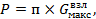 |
(4) |
где п - параметр, принимаемый равным 2,5 для бортового крепления, 1,0 - для носового крепления.
6.4. Швартовочные крепления располагаются на ШП таким образом, чтобы обеспечить крепление вертолета против направления господствующего ветра.
6.5. В том случае, когда климатические и почвенно-грунтовые условия способствуют созданию высококачественного дернового покрова на ШП, допускается устраивать только фундаменты под швартовочные крепления без устройства искусственного покрытия на всей поверхности ШП.
7.1. Количество стоянок вертолетов на перроне Cп определяется по формуле
|
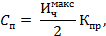 |
(5) |
где - максимальная часовая интенсивность движения вертолетов (только перевозящих пассажиров);
Kпр - коэффициент, учитывающий пропускную способность стоянки перрона, принимаемый для вертолетов Ми-4, Ми-8, Ка-32 1,2 и 0,85 для вертолетов Ми-2, Ка-26.
7.2. Схемы и способы расстановки вертолетов на перроне следует принимать с учетом рекомендаций раздела «Места стоянки вертолетов».
Минимально допустимые расстояния между вертолетами и препятствиями принимаются те же, что и для МС.
8.1. Расстояния между осями МС и ЛП, между индивидуальными МС, с которых производятся полеты, должно быть не менее трех диаметров несущего винта расчетного вертолета. При рулении вертолета на собственной тяге расстояние от конца лопастей несущего винта до препятствия должно быть не менее половины его диаметра.
Расстояние между разнотипными вертолетами, стоящими рядом на МС или перроне, должно приниматься по размерам большего из них.
8.2. Швартовочные площадки должны располагаться от боковой границы ЛП и зданий на расстоянии, равном трем диаметрам несущего винта расчетного типа вертолета, а от магистральной РД - на расстоянии двух диаметров (по осям).
Желательно, чтобы здания располагались по отношению к швартовочным площадкам со стороны слабых ветров.
8.3. Перрон (если он имеется) должен быть удален от ВПП и ШП на расстояние, которое обеспечивает воздействие воздушного потока, создаваемого вертолетом, со скоростью не более 5 м/с. Расстояние от служебно-пассажирского здания до конца лопастей вертолетов должно быть не менее половины диаметра несущего винта вертолета.
8.4. При проектировании генерального плана базового вертодрома следует учитывать технологическую взаимосвязь элементов вертодрома, приведенную в табл. 7.
Таблица 7
|
Элемент вертодрома |
Требования к расположению и взаимосвязи элементов вертодрома |
|
Летная полоса |
Непосредственная связь при помощи сети РД с МС и перроном (если он имеется) |
|
Место стоянки |
Непосредственная связь со швартовочной площадкой, площадкой устранения девиации, преддоковой площадкой, объектами авиатопливообеспечения |
|
Перрон (при осуществлении регулярных пассажирских перевозок) |
Непосредственная связь с ЛП и МС вертолетов. Связь с объектами технического обслуживания и авиатопливообеспечения |
9.1. Вертодромы могут располагаться в аэропортах и на аэродромах всех классов.
В состав вертодрома, размещенного на территории аэропорта, как правило входят:
летная полоса;
места стоянки вертолетов;
рулежные дорожки.
9.2. Расстояние между границей летной полосы аэродрома и осью ВПП или ПП вертодрома должно быть не менее 100 м. Это расстояние должно быть уточнено с учетом розы ветров данного района и скорости воздушного потока, создаваемой несущим винтом вертолета, с таким расчетом, чтобы суммарная скорость ветра, перпендикулярного ВПП аэродрома, не превышала максимальную скорость ветра, допустимую для эксплуатируемых самолетов на данном аэродроме.
9.3. При расположении вертодромов в аэропортах целесообразно выделять отдельный сектор на территории аэродрома и исключать возможность руления вертолетов вдоль стоящих самолетов.
9.4. Удаление МС или ПП вертолета от МС самолета или РД аэродрома должно обеспечивать следующие минимальные расстояния:
при выполнении с МС или ПП взлетно-посадочных операций - 50 м;
при отсутствии взлетно-посадочных операций - согласно СНиП II-47-80.
10.1. Предназначаемый для строительства вертолетной станции или вертодрома земельный участок должен удовлетворять следующим требованиям:
иметь достаточные размеры для размещения вертодрома и территории служебно-технической застройки с учетом перспективного развития;
на прилегающей к участку местности не должно быть каких-либо препятствий для маневрирования и захода на посадку вертолетов.
10.2. Привертодромная территория должна обеспечивать безопасность выполнения взлетно-посадочных операций вертолетов при взлетах и посадках с коротким разбегом-пробегом и по-вертолетному с использованием и без использования влияния воздушной подушки.
10.3. Привертодромная территория в плане представляет собой прямоугольник, состоящий из боковой и двух торцовых частей.
10.4. Привертодромная территория состоит из плоскостей ограничения препятствий в направлении взлета и посадки и боковых плоскостей ограничения препятствий. Схема расположения элементов привертодромной территории приведена на рис. 4. Размеры и наклоны плоскостей ограничения препятствий для взлетов и посадок с коротким разбегом-пробегом и по-вертолетному с использованием влияния воздушной подушки приведены в табл. 8. Данные взлетов и посадок по-вертолетному без использования влияния воздушной подушки приведены на рис. 5.
Таблица 8
|
Параметры привертодромной территории |
Размеры привертодромной территории по типам вертолетов |
||
|
Ми-6, Ми-10, Ми-26 |
Ми-4, Ми-8, Ка-32 |
Ми-2, Ка-26 |
|
|
l1 |
1160 |
1120 |
1160 |
|
b1 |
120 |
100 |
85 |
|
b2 |
700 |
660 |
645 |
|
|
1꞉20 |
1꞉10 |
1꞉20 |
Примечание. Параметры привертодромной территории для вертолетов Ми-26 и Ка-32 являются предварительными и будут уточнены по результатам испытаний.
10.5. Воздушные высоковольтные линии электропередачи (ЛЭП), расположенные в пределах полос воздушных подходов (ПВП), кроме ограничения по высоте должны быть удалены от границы летной полосы (ЛП) вертодрома, посадочной площадки не менее чем на 1,0 км и на 0,5 км, если ЛЭП, пересекающая ПВП со стороны вертодрома, закрыта складками местности, лесопосадками, зданиями и т.п., не пересекающими плоскости ограничения воздушных препятствий. Расстояние от боковой границы ЛП должно быть не менее 0,3 км и 0,12 км, если ЛЭП закрыта на всем протяжении затеняющими объектами (рис. 6).
Рис. 4. Схема полос воздушных
подходов при взлетах
и посадках по-самолетному или по-вертолетному
с использованием влияния воздушной подушки
Рис. 5. Схема полос воздушных
подходов и наклонов
плоскостей ограничения высоты препятствий посадочных
площадок при взлетах и посадках по-вертолетному
без использования влияния воздушной подушки
Рис. 6. Взаиморасположение
вертодрома (посадочной площадки) и высоковольтной
линии электропередачи (ЛЭП): 1 - летная полоса; 2 - ЛЭП; 3
- условная
боковая плоскость ограничения высоты препятствий; 4 - условная плоскость
ограничения высоты препятствий в направлении взлета и посадки
Поверхность элементов вертодромов и посадочных площадок для вертолетов следует принимать согласно СНиП «Аэродромы» в зависимости от весовой категории вертолета.
12.1. Размеры летных полос временных вертодромов (посадочных площадок) и полос воздушных подходов к ним должны приниматься в соответствии со СНиП II-47-80 и разделом 10 настоящего Пособия.
12.2. Максимальные уклоны ВПП временных вертодромов и посадочных площадок рекомендуется принимать согласно СНиП II-47-80.
13.1. Элементы вертодромов (ИВПП, РД, МС, перрон, ШП и другие площадки), предназначенные для эксплуатации вертолетов, рекомендуется оборудовать искусственными покрытиями (капитальными, облегченными или переходными) в зависимости от типа вертолета.
Искусственные покрытия элементов вертодромов (посадочных площадок) рассчитываются согласно СНиП «Аэродромы». Прочность ледовых вертодромов рассчитывается согласно приложению 24 НАС ГА-80 с учетом коэффициента динамичности 1,5.
13.2. В качестве искусственных покрытий вертодромов рекомендуется принимать следующие:
для вертолетов типа Ми-10, Ми-6, Ми-26, Ми-8, Ми-4, Ка-32 - сборный железобетон, армобетон, цементобетон, допускается применение асфальтобетона;
для вертолетов типа Ми-2 и Ка-26 - асфальтобетон или щебеночное покрытие, обработанное вяжущим.
При оборудовании временных вертодромов и посадочных площадок на участках со слабыми грунтами необходимо устраивать настил из бревен диаметром не менее 18 см, прочно скрепленных между собой, причем бревна верхнего наката должны укладываться поперек направления принятого старта.
Настил для вертолетов Ми-6, Ми-10К устраивается не менее чем в два наката, для остальных вертолетов - в один накат.
13.3. При проектировании надводных вертодромов конструкции основания взлетно-посадочных платформ (плоские фермы, балки, прогоны, сваи) должны рассчитываться на сосредоточенную нагрузку от максимального взлетного веса вертолета с коэффициентом 1,5.
Настил (перекрытие) взлетно-посадочной платформы рассчитывается на концентрированную нагрузку, составляющую 75 % максимального взлетного веса расчетного вертолета, действующую на площадь размером 30×30 см.
13.4. В зависимости от местных климатических и производственных условий рекомендуется прочность настила (перекрытия) взлетно-посадочных платформ проверять на временную равномерно распределенную нагрузку, возникающую в результате сильного снегопада или при одновременном нахождении на платформе вместе с вертолетом обслуживающего его технического персонала, пассажиров, грузов, подвижных средств механизации и грузового транспорта. В целях упрощения расчетов временную равномерно распределенную нагрузку рекомендуется принимать равной 500 кг/м2.
14.1. Надводные вертодромы и посадочные площадки могут устраиваться на свайном основании или на плавсредствах (баржах, понтонах). В первом случае разность отметок рабочей площади и наивысшего горизонта воды не должна быть менее 1 м.
Взлетно-посадочная платформа надводных вертодромов должна быть приближена к берегу, на котором могут быть расположены пассажирские здания, МС вертолетов и автотранспорта, док технического обслуживания, склад ГСМ.
14.2. Размеры взлетно-посадочных платформ и посадочных площадок, а также воздушные подходы к ним принимаются в соответствии со СНиП «Аэродромы» и табл. 1 в зависимости от заданного способа взлета.
14.3. По всему периметру надводного вертодрома (посадочной площадки) должны быть установлены:
ограничительный деревянный брус (комингс) сечением 30×25 см при эксплуатации тяжелых и средних вертолетов и 25×20 см для легких вертолетов, предотвращающий выкатывание вертолета. При упоре одновременно носового и основного колеса вертолета в ограничительный брус разрыв между концом лопасти несущего винта и препятствием должен быть не менее 1 м. Прочность комингса в горизонтальном направлении должна быть в два раза выше прочности основной стойки шасси вертолета;
предохранительная металлическая сетка, вынесенная от края надводной платформы на расстояние 1,5 м и закрепленная ниже отметки вертодрома (посадочной площадки) на 0,40 м. Наружный край сетки должен находиться на уровне отметки платформы (рис. 7).
Рис. 7. Ограждение посадочной
площадки: 1 -
посадочная площадка; 2 - ограничительный брус
(комингс); 3 - металлическая сетка
14.4. На платформе должны быть установлены якоря для крепления вертолета в случае штормовых ветров. Якорные узлы должны выполняться впотай и рассчитываться на нагрузки, указанные в НАС ГА-80.
14.5. На центральной части посадочной площадки в пределах участка приземления должна быть закреплена сеть из пенькового каната с окружностью каната 50 70 мм, размер ячеек принимается следующий:
|
Тип вертолета |
Размер ячеек, мм |
|
Ми-26, Ми-10, Ми-6 |
40×40 |
|
Ми-8, Ми-4, Ка-32 |
30×30 |
|
Ка-26, Ми-2 |
25×25 |
14.6. Посадочная площадка должна быть соединена с берегом или другим сооружением двумя трапами для перехода пассажиров. Причем трапы должны быть независимыми друг от друга. Один из трапов должен быть рассчитан на возможность руления вертолетов.
Ширину трапа, соединяющего надводную взлетно-посадочную платформу с берегом, следует принимать равной 10 м для тяжелых вертолетов, 6 и 4 м соответственно для средних и легких. Борта трапа должны иметь ограничительный брус (комингс). Трап следует рассчитывать на нагрузки, равные 60, 18, 4,5 т, соответственно для тяжелых, средних и легких вертолетов.
14.7. Для отвода с вертолета статического электричества на поверхность рабочей площади надводной платформы должна быть введена контактная клемма от заземлительного устройства.
14.8. Для обеспечения безопасности движения морских или речных судов на внешних углах надводного вертодрома (посадочной площадки) должны устанавливаться речные стандартные навигационные огни.
14.9. Места скопления пассажиров должны быть удалены от центра посадочной площадки на расстояние, обеспечивающее скорость ветра с учетом воздушного потока, создаваемого несущим винтом вертолета не более 5 м/с. В том случае, если невозможно расположить на таком расстоянии места скопления пассажиров, они должны быть защищены сооружениями, уменьшающими скорость воздушного потока (палубные надстройки, стартовые командные пункты и т.д.).
15.1. Рекомендуется следующий примерный перечень зданий и сооружений, входящих в состав служебно-технической территории вертолетной станции:
КДП;
служебно-пассажирское здание (при осуществлении регулярных пассажирских перевозок);
док технического обслуживания со швартовочной площадкой;
грузовой склад;
склад авиатоплива и смазочных материалов с необходимыми служебными помещениями;
склад технического и хозяйственного имущества;
гараж с площадкой для дежурного спецавтотранспорта;
котельная;
инженерные коммуникации;
метеоплощадка;
подъездная автодорога.
Примечания: 1. Состав зданий и сооружений, номенклатура помещений и их площади подлежат уточнению в каждом конкретном случае.
2. Аварийную электростанцию рекомендуется предусматривать на вертолетных станциях с объемом перевозок более 45 тыс. чел.
3. Метеорологическая площадка должна быть удалена от зданий, оврагов, лесонасаждений и водоемов не менее чем на 50 м. Устраивается при невозможности использования данных метеостанций.
15.2. При регулярных пассажирских перевозках служебно-пассажирское здание вертолетной станции предназначается для комплексного предполетного обслуживания пассажиров. Основным производственно-техническим показателем служебно-пассажирского здания является пропускная способность, определяемая количеством пассажиров, проходящих обслуживание в здании в течение 1 ч.
15.3. Проектирование служебно-пассажирского здания следует осуществлять согласно рекомендациям, изложенным в «Руководстве по проектированию аэропортов местных воздушных линий».
15.4. Грузовой склад предназначен для обработки и хранения грузов, транспортируемых вертолетами, и должен располагаться в непосредственной близости от грузового перрона (если таковой имеется) или мест стоянки вертолетов. Проектирование грузового склада следует производить согласно «Рекомендациям по проектированию аэропортов местных воздушных линий гражданской авиации».
16.1. Объекты технического обслуживания рекомендуется располагать таким образом, чтобы обеспечить нормальную эксплуатацию и ремонт вертолетов.
Объекты технического обслуживания предусматриваются, как правило, на базовых вертодромах. Временные вертодромы могут быть оборудованы швартовочными площадками.
16.2. Объекты технического обслуживания вертолетной станции (вертодрома) включают:
док для технического обслуживания и текущего ремонта, причем его размеры должны быть рассчитаны на размещение одного вертолета со снятым несущим винтом (винтами для соосной схемы);
производственное здание для размещения производственных, бытовых и административно-конторских помещений инженерно-авиационной службы;
преддоковую площадку с искусственным покрытием, обеспечивающую стоянку одного расчетного вертолета, которая рулежной дорожкой соединяется с МС и швартовочной площадкой.
Периодические формы регламентных работ должны выполняться в АТБ ближайшего аэропорта.
16.3. Количество доков для технического обслуживания вертолетов Kд определяется по формуле
|
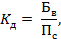 |
(6) |
где Бв - количество приписных вертолетов;
Пс - пропускная способность одного места обслуживания в год.
Пропускная способность одного дока обслуживания вертолетов типа Ми-8 равна при двухсменной работе и налете 1500-2000 ч в год на вертолет - 16-22, а средних вертолетов (типа Ми-2, Ка-26) - 15-25. Один док, в зависимости от весовой категории вертолета, может обслужить 15-25 вертолетов в год.
16.4. Док и производственное здание для технического обслуживания вертолетов следует располагать вблизи МС и швартовочной площадки. Они могут блокироваться с другими техническими и складскими зданиями вертолетной станции.
16.5. Базовые вертолетные станции должны иметь девиационные площадки, располагаемые от зданий и сооружений на расстоянии, предусмотренном НТП-11.
16.6. Щиты с противопожарным оборудованием устанавливаются на участках склада ГСМ и МС. На других объектах устанавливаются только огнетушители.
16.7. Требования к техническому оборудованию МС вертолетов (противопожарные средства, электро- и водоснабжение, средства отвода статического электричества и т.д.) следует принимать по аналогии с требованиями, предъявляемыми к МС самолетов.
17.1. Склады проектируются в соответствия с требованиями СНиП «Склады нефти и нефтепродуктов. Нормы проектирования».
17.2. Склад ГСМ должен располагаться вне зоны воздушных подходов к вертодрому с подветренной стороны и по возможности ниже по рельефу.
17.3. Для хранения авиатоплива и масел на складах ГСМ вертодромов могут использоваться стальные вертикальные и горизонтальные резервуары. Хранение масел и спецжидкостей может производиться в таре.
17.4. Специальные площадки для хранения ГСМ в таре, предусматриваемые на временных вертодромах (посадочных площадках), необходимо располагать не ближе 50 м от летных полос, МС вертолетов и других построек вертодрома.
17.5. Вертодромы, находящиеся в аэропортах или непосредственной близости от них, обеспечиваются горюче-смазочными материалами и средствами заправки соответствующими службами аэропортов.
17.6. Заправка топливом ВС в зависимости от конкретных условий осуществляется топливозаправщиками, упрощенными системами централизованной заправки (ЦЗС) или переносными и передвижными средствами заправки. Технологические схемы заправки ВС через систему ЦЗС, заправочного агрегата и пункта налива представлены в приложении 4.
17.7. Количество и типы средств заправки, фильтров, насосов, счетчиков и другого технологического оборудования выбираются при проектировании комплекса объектов ГСМ в зависимости от расходов топлива, интенсивности движения и типов ВС, а также способа доставки авиатоплива.
Перечень рекомендуемого оборудования для объектов ГСМ представлен в приложении 5.
17.8. Объем потребной резервуарной емкости определяется в следующем порядке:
по каждому типу ВС по номограммам (рис. 8, 9, 10) определяются расчетные расходы топлива (среднесуточный и в сутки «пик») в зависимости от интенсивности движения ВС в час «пик» λ, среднего объема заправки Q, коэффициентов неравномерности движения Kч, Kc, приведенных в табл. 9;
затем определяются расчетные значения расходов топлива для вертодрома (среднесуточный и в сутки «пик») как сумма расходов топлива по каждому типу ВС;
по графикам (рис. 11, 12) для различных способов доставки в зависимости от расчетных значений топлива на вертодроме определяется потребная резервуарная емкость.
Рис. 8. Номограмма определения
среднесуточного
расхода топлива Qсс и расхода
топлива в сутки
«пик» Qсп в
зависимости от интенсивности
движения ВС в час «пик» λ и среднего объема
заправки q, для q 0,1 - 1,0 м3
Рис. 9. Номограмма определения
среднесуточного
расхода топлива Qсс и
расхода топлива в
сутки «пик» Qсп в
зависимости от интенсивности
движения ВС в час «пик» λ и среднего
объема заправки q для q1 ÷ 3 м
Рис. 10. Номограмма определения
среднесуточного
расхода топлива Qсс и
расхода топлива
в сутки «пик» Qсп в
зависимости от
интенсивности движения ВС в час «пик» λ и
среднего
объема заправки q, для q1 ÷ 10 м3
Рис. 11. График определения
резервуарной
емкости при доставке транспортом: I - автомобильным;
II - железнодорожным; III - трубопроводным
Рис. 12. График определения
резервуарной емкости
при доставке топлива в аэропорт водным транспортом
|
Класс вертолетной станции, вертодрома |
Коэффициент суточной неравномерности Kc |
Коэффициент часовой неравномерности Kч |
|
I |
2,0 - 3,0 |
3,2 - 4,0 |
|
II |
3,0 - 3,75 |
4,0 - 5,5 |
|
III |
3,75 |
5,5 |
17.9. При проектировании складов и объектов ГСМ возможно использование следующих типовых проектов, разработанных ГПИ и НИИ ГА Аэропроект:
склад ГСМ емкостью 4600 м3, арх. № 8725;
расходный склад ГСМ емкостью 2600 м3 для аэропортов ГА, арх. № 8724; то же емкостью 1100 м3, арх. № 8723; то же емкостью 600 м3, арх. № 8722;
упрощенная система ЦЭС, арх. № 8727;
типовые технические решения по устройству пожарной сигнализации, автоматическому пожаротушению и оборудованию инженерно-техническими средствами охраны аэропортов ГА, арх. № 9839.
18.1. Для обеспечения полетов вертолетов в ночное время и днем в условиях ухудшенной видимости вертодромы должны быть оснащены следующим светосигнальным оборудованием:
огнями приближения;
входными ограничительными огнями;
посадочными огнями;
рулежными огнями;
визуальным указателем глиссады;
приводным светомаяком;
заградительными огнями.
Схема расположения светосигнального оборудования приведена на рис. 13.
Тип, количество арматур и параметры визуального указателя глиссады будут определены по результатам испытаний.
По согласованию с заказчиком визуальный указатель можно не устанавливать.
При необходимости огнями приближения и визуальным указателем глиссады может быть оборудовано и второе направление посадки.
18.2. В качестве светосигнального оборудования вертодромов могут быть использованы всенаправленные огни света 30 - 200 кд.
Примечания: 1. Светотехнические характеристики огней будут уточнены по результатам испытаний.
2. При использовании огней с большей силой света, а также для визуального указателя глиссады должно быть предусмотрено регулирование их яркости.
18.3. Для управления светосигнальным оборудованием должен быть предусмотрен пульт, устанавливаемый на СКП.
18.4. Пульт дистанционного управления должен обеспечивать раздельное управление и регулирование яркости огней приближения с каждого направления посадки, огней ВПП, рулежных огней, визуального указателя глиссады, приводного светомаяка, заградительных огней.
18.5. Электропитание светосигнального оборудования должно осуществляться от местной сети переменного тока 220/380 В.
18.6. Для обеспечения полетов в ночное время на посадочных площадках для вертолетов должно быть предусмотрено следующее светосигнальное оборудование:
огни приближения;
посадочные огни;
ограничительные огни;
прожекторы подсвета ПП;
визуальный указатель глиссады;
приводной светомаяк;
заградительные огни.
Рис. 13. Схема расположения
светосигнального оборудования вертодрома:
- огонь приближения, белый;
- посадочный огонь, белый;
- входной ограничительный огонь,
зеленый-красный;
- рулежный огонь, синий;
-
приводной светомаяк;
-
визуальный указатель глиссады.
Огни приближения, посадочные и ограничительные огни должны быть всенаправленные и иметь силу света 10 - 50 кд.
Схема расположения светосигнального оборудования посадочных площадок с открытыми подходами приведена на рис. 14.
При необходимости огнями приближения и визуальным указателем глиссады может быть оборудовано и второе направление посадки.
При наличии комплекта метеоприборов для измерения скорости и направления ветра освещенный ветроуказатель можно не устанавливать.
Схема расположения светосигнального оборудования посадочных площадок с закрытыми подходами приведена на рис. 15.
18.7. По согласованию с заказчиком визуальный указатель глиссады, прожекторы подсвета и приводной светомаяк можно не устанавливать.
Управление светосигнальным оборудованием должно осуществляться с пульта, устанавливаемого на СКП.
18.8. Пульт должен обеспечивать возможность разделительного управления:
огнями приближения;
посадочными и ограничительными огнями;
прожекторами подсвета;
визуальным указателем глиссады;
приводным светомаяком.
18.9. Электропитание светосигнального оборудования должно осуществляться от местной сети 220/380 В или от автономного источника электропитания (бензоагрегата).
18.10. Все воздушные препятствия вблизи вертодромов и посадочных площадок должны иметь световое ограждение с использованием заградительных огней красного цвета с силой света не менее 10 кд.
19.1. Внешнее ограждение должно исключать возможность проникновения посторонних лиц на территорию вертолетных станций. Для прохода обслуживающего персонала в служебно-пассажирском здании станции должны оборудоваться служебные проходы.
Рис. 14. Схема расположения
светосигнального оборудования 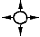
посадочных площадок с открытыми подходами:
- огонь приближения, белый;
- посадочный огонь, белый;
- ограничительный огонь, красный;
- прожектор подсвета;
- визуальный указатель глиссады;
- освещенный ветроуказатель
Рис. 15. Схема расположения
светосигнального оборудования на посадочных площадках с ограниченными
воздушными подходами: 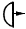 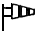
- посадочный огонь, белый;
- ограничительный огонь, красный;
- визуальный указатель глиссады;
- приводной светомаяк, белый;
Ограждение территории вертолетной станции должно осуществляться согласно рекомендациям НАС ГА-80.
19.2. Территория склада ГСМ должна выгораживаться от остальной служебной территории забором высотой не менее 1,8 м и иметь два въезда: внешний, оборудованный механическими запираемыми воротами, и внутренний, оборудованный шлагбаумом.
19.3. Охранной сигнализацией должны быть оснащены следующие объекты и помещения:
док технического обслуживания вертолетов;
КДП (регламентная, аппаратная связь, АТБ, кладовая узла связи, комната метеослужбы, электрощитовая).
19.4. Шлейфы охранной сигнализации объектов вертолетной станции, располагаемых на территории существующих предприятий гражданской авиации (например, аэропортов), должны выводиться на ПЦН караульных помещений ВОХР, охраняющих данное предприятие.
При автономном расположении вертолетных станций I и II классов шлейфы охранной сигнализация должны быть выведены в специально выделенное помещение ВОХР служебно-пассажирского здания.
19.5. В зоне специального контроля должна быть предусмотрена прямая телефонная связь с комнатой милиции. В комнате личного досмотра должен быть установлен телефон.
Для питания аппаратуры специального контроля должна быть введена силовая сеть для потребителя мощностью 3 кВт.
Приложения
ОСНОВНЫЕ ЛЕТНО-ТЕХНИЧЕСКИЕ ХАРАКТЕРИСТИКИ ВЕРТОЛЕТОВ ГРАЖДАНСКОЙ АВИАЦИИ
|
|
Элемент вертолета |
Характеристика вертолетов по типам |
||||||
|
Ми-2 |
Ми-4 |
Ми-8 |
Ми-6 |
Ми-10к |
Ка-26 |
Ми-26 |
||
|
1 |
2 |
3 |
4 |
5 |
6 |
7 |
8 |
9 |
|
1 |
Максимальный взлетный вес, кг |
3550 |
7500 |
12000 |
42500 |
38000 |
3250 |
56000 |
|
2 |
Вес пустого вертолета, кг |
2350 |
5090 - 5543 |
6999 |
27464 |
24788 |
2100 |
28150 |
|
3 |
Количество и диаметр несущих винтов, шт. м |
1×14,5 |
1×21,0 |
1×21,29 |
1×35,0 |
1×35,0 |
2×13,0 |
1×32,0 |
|
4 |
Число лопастей несущих винтов, шт. |
3 |
4 |
5 |
5 |
5 |
6 |
|
|
5 |
Общая длина вертолета с вращающимися винтами, м |
17,42 |
25,015 |
25,2 |
42,02 |
41,89 |
13,0 |
40,025 |
|
6 |
Распределение нагрузок на опоры, %: |
|
|
|
|
|
|
|
|
|
основные |
74,4 |
83,0 |
73,0 |
77,0 |
81,2 |
80,0 |
|
|
|
носовые |
25,6 |
17,0 |
27,0 |
23,0 |
18,8 |
20,0 |
|
|
7 |
Диаметр хвостового винта, м |
2,7 |
3,6 |
3,8 |
6,3 |
6,3 |
- |
7,6 |
|
8 |
Длина вертолета без винтов, м |
11,94 |
16,79 |
18,3 |
33,125 |
32,86 |
7,746 |
|
|
9 |
Расстояние от нижней точки вертолета до земли, м |
0,40 |
0,54 |
0,50 |
0,596 |
0,42 |
0,370 |
|
|
10 |
Высота вертолета на стоянке, м |
3,75 |
4,40 |
4,70 |
9,00 |
8,90 |
4,05 |
|
|
11 |
Колея шасси, м: |
|
|
|
|
|
|
|
|
|
переднего |
- |
1,53 |
- |
- |
2,05 |
0,90 |
|
|
|
заднего |
3,05 |
3,822 |
4,50 |
7,502 |
5,00 |
2,42 |
|
|
12 |
База шасси, м |
2,63 |
3,79 |
4,258 |
9,096 |
8,74 |
3,48 |
|
|
13 |
Размер колес, мм: |
|
|
|
|
|
|
|
|
|
основных |
600×180 |
700×250 |
865×280 |
1325×480 |
950×350 |
595×185 |
|
|
|
носовых |
300×125 |
400×150 |
595×185 |
720×310 |
595×185 |
300×125 |
|
|
14 |
Давление в пневматиках колес, кг/см2: |
|
|
|
|
|
|
|
|
|
основных |
4,0 |
4,0 |
5,5 |
7,0 |
6,0 |
2,5 |
|
|
|
носовых |
3,5 |
4,0 |
4,5 |
6,0 |
4,5 |
3,5 |
|
|
15 |
Емкость основных топливных баков, л |
600 |
960 - 1000 |
2643 |
8150 |
6920 |
620 |
|
|
16 |
Емкость дополнительных топливных баков, л |
2×238 |
500 |
1830 |
9000 |
4920 |
|
|
|
17 |
Сорт топлива |
T-1 TC-2 T-2 |
Б-95 |
T-1 TC-1 |
T-1 T-2 TC-1 |
T-1 T-2 TC-1 |
СБ-78 |
|
|
18 |
Емкость маслобаков, л |
38 |
65 |
32 |
70 |
70 |
39 |
|
|
19 |
Емкость баков противообледенительной системы, л |
- |
63,1 |
- |
31 |
31 |
44 |
|
|
20 |
Тип двигателей |
ГТД-350 |
АШ-82В |
ТВ-2-117А |
Д-25В |
Д-25В |
М-14B26 |
Д-136 |
|
21 |
Количество и взлетная мощность двигателей, шт.∙л.с. |
2×400 |
1×1700 |
2×1500 |
2×5500 |
2×5500 |
2×325 |
|
|
22 |
Часовой расход топлива на крейсерской скорости (H = 500 м), кг/ч |
220 - 250 |
225 |
500 |
2400 |
2300 |
100 |
|
|
23 |
Аэронавигационный запас топлива (на 30 мин полета), кг |
120 |
95 |
285 |
1200 |
1150 |
50 |
|
|
24 |
Крейсовая скорость полета (H = 500 м), км/ч |
180 |
140 |
210 - 225 |
230 - 250 |
200 |
120 - 130 |
|
|
25 |
Максимальная скорость горизонтального полета, км/ч |
180 (по огранич. ОКБ) |
200 |
240 |
300 |
250 |
150 |
|
|
26 |
Практическая дальность полета без дополнительных топливных баков (H = 500 м), км |
290 |
475 |
650 - 500 |
415 |
395 |
570 |
|
|
27 |
Практическая дальность полета с дополнительными топливными баками (H = 500 м), км |
595 |
792 |
1140 |
955 |
788 |
570 |
|
|
28 |
Максимальная высота полета, м |
4000 |
6000 |
4500 |
4500 |
3000 |
3000 |
|
|
29 |
Число пассажирских мест |
4 - 6 |
12 |
28 |
- |
- |
6 - 7 |
74 - 82 |
|
30 |
Размер грузового люка, м |
1,12×1,09 |
1,85×1,55 |
1,82×2,34 |
2,655×2,52 |
1,535×1,250 |
0,7×0,5 |
|
|
31 |
Максимальный вес перевозимого груза, кг: |
|
|
|
|
|
|
|
|
|
внутри фюзеляжа |
700 |
1500 |
4000 |
12000 |
3000 |
710 |
|
|
|
на внешней подвеске |
800 |
1300 |
3000 |
8000 |
11000 |
900 |
|
|
32 |
Допустимые скорости ветра, м/с: |
|
|
|
|
|
|
|
|
|
встречные |
18 |
18 |
25 |
25 |
- |
18 |
|
|
|
боковые (под углом 90°) |
5 |
5 |
10 |
10 |
- |
8 |
|
|
33 |
Расстояние от конца лопасти до носового колеса, м |
5,130 |
7,442 |
7,151 |
14,980 |
14,572 |
3,380 |
|
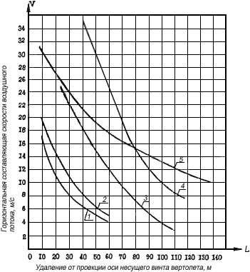
Рис. 1. Горизонтальная
составляющая скорости
воздушного потока, создаваемого несущим
винтом вертолета, в направлении хвостовой части
вертолета: 1 - Ка-26; 2 - Ми-2; 3 - Ми-8; 4 -
Ми-10; 5 - Ми-6
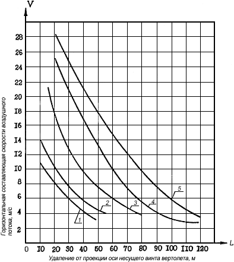
Рис. 2. Горизонтальная
составляющая скорости
воздушного потока, создаваемого несущим
винтом вертолета, в направлении носа и бортов:
1 - Ка-26; 2 - Ми-2; 3 - Ми-8; 4 - Ми-10; 5
- Ми-6
ПРИМЕРНЫЕ ГЕНЕРАЛЬНЫЕ ПЛАНЫ ВЕРТОДРОМОВ И ВЕРТОЛЕТНЫХ СТАНЦИЙ ДЛЯ ВЕРТОЛЕТОВ ГРАЖДАНСКОЙ АВИАЦИИ
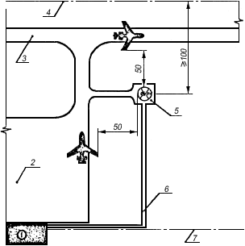
Рис. 1. Примерная схема
посадочной площадки для
вертолетов в аэропорту: 1 - аэровокзал; 2 -
перрон; 3 - магистральная рулежная дорожка; 4 -
граница летной полосы аэродрома; 5 - посадочная
площадка; 6 - пешеходная аллея; 7 -
ограждение аэропорта
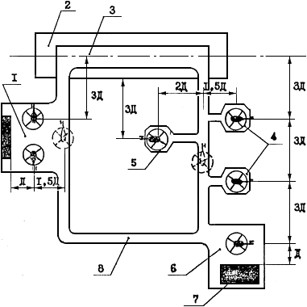
Рис. 2. Взаиморасположение
основных элементов
вертодромов: 1 - перрон; 2 - полоса безопасности;
3 - ВПП; 4 - индивидуальные МС; 5 -
швартовочная площадка; 6 - преддоковая
площадка; 7 - док технического обслуживания;
8 - рулежная дорожка
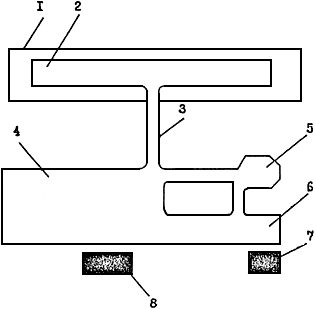
Рис. 3. Примерная схема базового
вертодрома:
1 - ЛП; 2 - ВПП; 3 - РД; 4 - групповая МС;
5 - швартовочная площадка; 6 - преддоковая
площадка; 7 - док технического обслуживания;
8 - грузовой склад
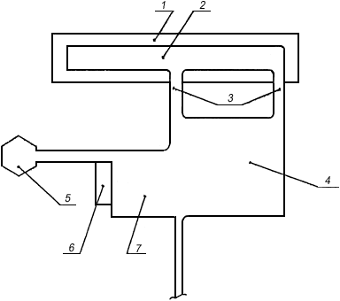
Рис. 4. Примерная схема
базового вертодрома:
1 - ЛП; 2 - ВПП; 3 - РД; 4 - групповая МС;
6 - док технического обслуживания; 7 -
преддоковая площадка; 5 - швартовочная площадка
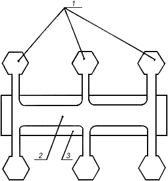
Рис. 5. Схема временного
вертодрома:
1 - индивидуальные МС; 2 - ВПП;
3 - ЛП
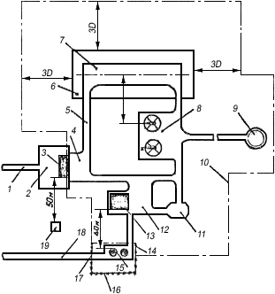
Рис. 6. Схема генерального
плана базовой вертолетной
станции: 1 - подъездная автодорога; 2 -
привокзальная площадь; 3 - служебно-пассажирское
здание с КДП; 4 - перрон;
5 - рулежная дорожка; 6 -
летная полоса; 7 - ВПП; 8 - групповая МС; 9 -
девиационная площадка; 10 - ограждение вертолетной
станции; 11 - швартовочная площадка; 12 - преддоковая
площадка; 13 - док, сблокированный с
производственным зданием; 14 - шлагбаум; 15 - склад
хранения топлив и масел; 16 - ограждение склада ГСМ; 17 -
механически закрывающиеся ворота; 18 -
подъездная дорога к складу ГСМ; 19 - метеоплощадка
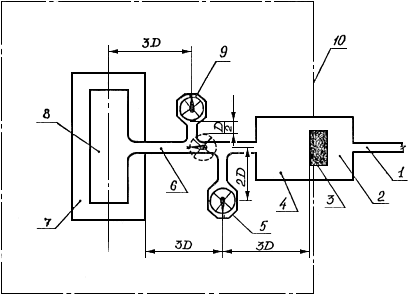
Рис. 7. Схема генерального
плана конечной вертолетной
станции: 1 - подъездная дорога; 2 - привокзальная
площадь; 3 - служебно-пассажирское здание с КДП;
4 - перрон; 5 - швартовочная площадка; 6 - рулежная
дорожка; 7 - летная полоса; 8 - ВПП; 9 - место
стоянки вертолета; 10 - ограждение вертолетной станции
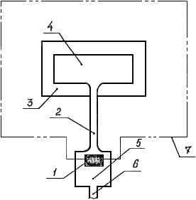
Рис. 8. Схема генерального
плана промежуточной
вертолетной станции: 1 - пассажирский павильон; 2 -
пешеходная дорожка; 3 - летная полоса; 4 - ВПП;
5 - привокзальная площадь; 6 - подъездная автодорога;
7 - ограждение вертолетной станции
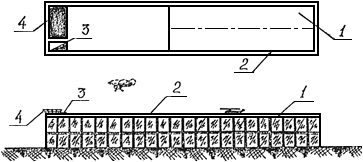
Рис. 9. Схема планировки
вертодрома на крыше
аэровокзала или другого здания: 1 - ВПП; 2 - ограждение;
3 - пассажирский лаз; 4 - помещение диспетчерской
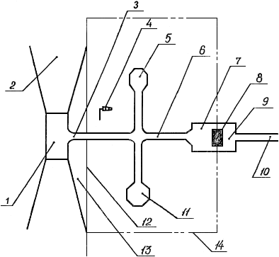
Рис. 10. Схема генерального
плана конечной вертолетной станции
с надводной взлетно-посадочной площадкой: 1 -
ВПП; 2 - полоса воздушных подходов; 3 - трап для
транспортировки вертолетов на берег; 4 - ветроуказатель;
5 - место стоянки вертолета; 6 - рулежная
дорожка; 7 - перрон; 8 - пассажирский павильон; 9 -
привокзальная площадь;
10 - подъездная автомагистраль; 11 - швартовочная площадка; 12
-
береговая линия; 13 - водоем; 14 - ограждение вертолетной
станции
МЕТОДИКА ОПРЕДЕЛЕНИЯ ОПТИМАЛЬНОГО СПОСОБА УСТАНОВКИ ВЕРТОЛЕТОВ НА МС И СХЕМЫ ИХ РАССТАНОВКИ
Приведенные затраты на строительство и эксплуатацию мест стоянки вертолетов Пэ определяются по формуле
|
|
(1) |
где K - капиталовложения в строительство искусственных покрытий и на освоение новых земель, тыс. руб.;
Eн - нормативный коэффициент эффективности капиталовложений, принимаемый согласно нормативным документам МГА;
- расходы на эксплуатацию вертолетов, тыс. руб.;
- расходы на наземную эксплуатацию МС вертодрома, тыс. руб.
Капитальные вложения K определяются по формуле
|
|
(2) |
где Kосв. - капитальные вложения на освоение новых земель взамен изымаемых для несельскохозяйственных нужд, тыс. руб.;
Kстр. - капитальные вложения на строительство искусственных покрытий, тыс. руб.
Капитальные вложения на строительство искусственных покрытий мест стоянки вертолетов Kстр. определяются по формуле
|
|
(3) |
где F - площадь искусственных покрытий мест стоянки вертолетов, м2;
S - стоимость одного м2 покрытия, руб.
Площадь искусственных покрытий мест стоянки вертолетов зависит от способа установки и схемы расстановки вертолетов на МС, от размеров и диаметра несущего винта вертолетов с учетом безопасного расстояния между концами лопастей несущих винтов соседних вертолетов.
Схемы расстановки вертолетов приведены на рис. 1 - 4.
Стоимость искусственных покрытий принимается при проектировании в зависимости от типа вертолетов, гидрогеологических и почвенно-грунтовых условий.
Для технико-экономических расчетов при определении капитальных вложений на строительство искусственных покрытий мест стоянки вертолетов допускается пользоваться удельной площадью искусственных покрытий МС, приведенной в табл. на с. 65-66.
Капитальные вложения на освоение новых земель Kосв. взамен изымаемых для несельскохозяйственных нужд определяются по формуле
|
|
(4) |
где Fосв. - площадь землеотвода под места стоянки вертолетов, м2;
Sосв. - стоимость освоения новых земель взамен изымаемых для несельскохозяйственных нужд (принимается согласно постановлениям Совета Министров РСФСР и союзных республик).
Площадь землеотвода МС при установке вертолетов с помощью тягача и на тяге несущего винта равна площади искусственных покрытий, необходимой для расстановки конкретного количества вертолетов.
Площадь землеотвода МС при установке вертолетов с разворотом в воздухе равна сумме площадей индивидуальных мест стоянки с учетом ограждения МС по всему периметру, которое располагается от кромки МС на расстоянии не менее трех диаметров несущего винта расчетного вертолета.
Эксплуатационные расходы при рулении вертолетов на тяге несущего винта или с помощью буксировщика определяются по формуле
Рис. 1. Двухрядная схема расстановки вертолетов на групповой МС
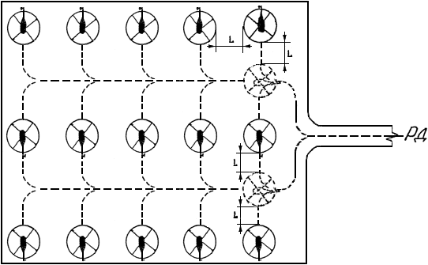
Рис. 2. Трехрядная схема расстановки вертолетов на групповой МС
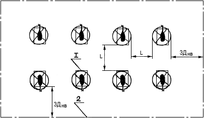
Рис. 3. Двухрядная схема
расстановки вертолетов на индивидуальные
МС, подлетом на малой высоте: 1 - индивидуальные
МС; 2 - граница землеотвода
Рис. 4. Трехрядная схема
расстановки вертолетов на
индивидуальные МС, подлетом на малой высоте: 1 -
индивидуальные МС; 2 - граница землеотвода
|
|
(5) |
где Tв - время руления вертолетов по МС, ч;
Sв - стоимость летного часа вертолета, руб.;
Иг - годовая интенсивность взлетно-посадочных операций, взл./пос.;
K - коэффициент, учитывающий наземную работу вертолета, принимаемый равным 0,2 при рулении вертолетов с помощью буксировщика, и 0,4 - при рулении вертолета на тяге несущего винта.
|
Способ установки и схема расстановки вертолетов |
Удельная площадь искусственных покрытий, м2 |
|
1 |
2 |
|
ЗАРУЛИВАНИЕ ВЕРТОЛЕТА С ПОМОЩЬЮ БУКСИРОВЩИКА |
|
|
I группа (Ми-6, Ми-10): |
|
|
двухрядная схема |
3,07 |
|
трехрядная схема |
3,61 |
|
II группа (Ми-8, Ми-4): |
|
|
двухрядная схема |
1,14 |
|
трехрядная схема |
1,34 |
|
III группа (Ми-2, Ми-1, Ка-26): |
|
|
двухрядная схема |
0,55 |
|
трехрядная схема |
0,64 |
|
ЗАРУЛИВАНИЕ ВЕРТОЛЕТА НА ТЯГЕ НЕСУЩЕГО ВИНТА |
|
|
I группа (Ми-6, Ми-10): |
|
|
двухрядная схема |
4,08 |
|
трехрядная схема |
4,90 |
|
II группа (Ми-8, Ми-4): |
|
|
двухрядная схема |
1,53 |
|
трехрядная схема |
1,83 |
|
III группа (Ми-2, Ми-1, Ка-26): |
|
|
двухрядная схема |
0,73 |
|
трехрядная схема |
0,87 |
|
УСТАНОВКА ВЕРТОЛЕТА С РАЗВОРОТОМ В ВОЗДУХЕ |
|
|
II группа (Ми-8, Ми-4): |
|
|
двухрядная схема |
0,26 |
|
трехрядная схема |
0,26 |
|
III группа (Ми-2, Ми-1, Ка-26): |
|
|
двухрядная схема |
0,14 |
|
трехрядная схема |
0,14 |
Время руления вертолетов по МС с помощью буксировщика или на тяге несущего винта Tp определяется по формуле
|
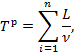 |
(6) |
где L - протяженность пути руления вертолета по МС, м;
ν - скорость руления вертолета с помощью буксировщика или на тяге несущего винта по МС, м/с;
n - количество вертолетов конкретной группы на МС, шт.
Для технико-экономических расчетов может быть принята следующая скорость руления и буксировки вертолетов:
при рулении с помощью буксировщика - 5 км/ч;
при рулении на тяге несущего винта - 15 км/ч.
Протяженность пути руления определяется в зависимости от компоновки МС в каждом конкретном случае.
Стоимость летного часа вертолета принимается в зависимости от условий эксплуатации по действующим в МГА документам.
Годовая интенсивность взлетно-посадочных операций Иг определяется заданием на проектирование.
Эксплуатационные расходы на летную работу вертолета при установке его на МС с разворотом в воздухе зависят от времени нахождения вертолета в воздухе, интенсивности взлетно-посадочных операций и определяются по формуле
|
|
(7) |
где Tл - время нахождения вертолета в воздухе, ч;
Sв - стоимость летного часа вертолета, руб.;
Иг - годовая интенсивность взлетно-посадочных операций, взл./пос.
Расчет времени нахождения вертолета в воздухе при установке его на МС производится для способа посадки по-вертолетному с использованием влияния воздушной подушки.
Время маневрирования вертолетов над МС при установке с разворотом в воздухе T определяется по формуле
|
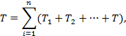 |
(8) |
где T1, T2, … T - время маневрирования вертолета конкретной группы над МС, c;
n - количество вертолетов, установленных на МС, шт.
|
|
(9) |
где t1 - время горизонтального полета вертолета вдоль МС от условной точки на рулежной дорожке до продольной кромки МС, с.
|
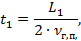 |
(10) |
где L1 - ширина МС, м;
t2 - время горизонтального полета вертолета вдоль продольной кромки МС до места стоянки конкретного вертолета, с.
|
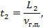 |
(11) |
где L2 - расстояние вдоль продольной кромки МС до места стоянки конкретного вертолета, м;
t3 - время планирования вертолета с высоты h1 = 20 - 30 м 30 м, с.
|
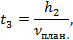 |
(12) |
t4 - время висения вертолета над посадочной площадкой (принимается согласно Руководству по летной эксплуатации конкретного вертолета), с;
t5 - время вертикального снижения вертолета с высоты зависания вертолета h2 = 2 - 3 м, с.
|
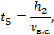 |
(13) |
где νв.с. - скорость вертикального снижения.
Скорость горизонтального полета вертолета νг.п., планирования νплан., вертикального снижения νв.с.. принимаются согласно Руководству по летной эксплуатации конкретного типа вертолета.
Расходы на наземную эксплуатацию МС вертодрома определяются по формуле
|
|
(14) |
где Kстр. - капиталовложения на строительство искусственных покрытий, тыс. руб.
При технико-экономических расчетах допускается пользоваться графиками, приведенными на рис. 5 - 15.
Порядок пользования графиками следующий: для определения оптимального способа установки вертолетов на МС необходимо знать годовую интенсивность полетов Иг и количество базирующихся вертолетов. Если точка пересечения этих значений находится в зоне 1 или на границе с зоной 2, то необходимо принять способ установки вертолетов на МС с помощью буксировщика. Если точка пересечения находится в зоне 2, то необходимо выбрать способ установки вертолетов на тяге несущего винта.
Способ установки вертолетов на МС определяется дважды, так как сравниваемые способы установки вертолетов на МС имеют две схемы расстановки, а именно двухрядную и трехрядную.
Для определения оптимальной схемы расстановки вертолетов на МС необходимо по годовой интенсивности полетов и количеству базирующихся вертолетов определить точку пересечения этих значений. Если она находится в зоне А или на границе с зоной Б, то принимается двухрядная схема расстановки вертолетов. Если точка пересечения расположена в зоне Б, принимается трехрядная схема расстановки вертолетов.
Окончательным вариантом является тот, при котором совпали схемы расстановки.
Примеры определения оптимального способа установки вертолетов на МС и оптимальной схемы их расстановки
Пример 1. Исходные данные:
дорожно-климатическая зона - I;
группа вертолетов - II (Ми-4, Ми-8, Ка-32);
количество вертолетов - 20;
годовая интенсивность движения - 100 взл./пос.
1. По графикам выбора оптимального способа установки вертолетов II группы на МС в I и II ДЗК (рис. 7 и 8) определяем, что при годовой интенсивности движения вертолетов 100 взл./пос. и 20 базирующихся вертолетах при двухрядной схеме расстановки точка пересечения находится в зоне 1, следовательно, установку вертолетов следует производить с помощью буксировщика.
При данной интенсивности и количестве вертолетов на графике с трехрядной схемой расстановки точка пересечения расположена в зоне 1, следовательно, и в этом случае установку вертолетов следует производить с помощью буксировщика.
2. По графику выбора оптимальной схемы расстановки вертолетов II группы при заруливании с помощью буксировщика в I и II ДЗК (рис. 18) при указанных исходных данных точка пересечения расположена в зоне А, следовательно, схема расстановки вертолетов должна быть двухрядной.
3. Порядок определения схематично представлен в следующем виде:
(рис. 7) двухрядная схема расстановки → установка при помощи буксировщика → (рис. 18) двухрядная схема расстановки;
(рис. 8) трехрядная схема расстановки → установка при помощи буксировщика → (рис. 18) двухрядная схема расстановки.
Окончательно принимается вариант, при котором совпала схема расстановки вертолетов, т.е. установка вертолетов на стоянки при помощи буксировщика с двухрядной схемой их расстановки.
Пример 2. Исходные данные:
дорожно-климатическая зона - II;
группа вертолетов - III (Ми-2, Ка-26);
количество вертолетов - 10;
годовая интенсивность движения - 150 взл./пос.
1. По графикам (рис. 9 и 10) определяем способ установки вертолетов. На рис. 9 точка пересечения расположена в зоне 1, следовательно, установку вертолетов следует производить при помощи буксировщика. На рис. 10 точка пересечения расположена в зоне 2, следовательно, установку вертолетов следует производить на тяге несущего винта.
2. По рис. 19 и 22 устанавливаем, что точка пересечения расположена в зоне А, следовательно схема расстановки вертолетов должна быть двухрядной.
Рис. 5. Графики выбора
оптимального способа
установки вертолетов I группы МС при двухрядной (а)
и трехрядной (б) схемах расстановки в I и II
дорожно-климатических зонах: 1 - зона минимальных
приведенных затрат при заруливании вертолетов с
помощью буксировщика; 2 - зона минимальных
приведенных затрат при заруливании вертолетов на
тяге несущего винта
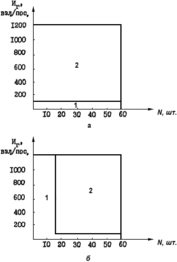
Рис. 6. Графики оптимального
способа установки
вертолетов II группы на МС при двухрядной (а)
и трехрядной (б) схемах расстановки вертолетов
в I и II дорожно-климатических зонах: 1 - зона
минимальных приведенных затрат при заруливании
вертолетов с помощью буксировщиков; 2 - зона
минимальных приведенных затрат при заруливании
вертолетов на тяге несущего винта
Рис. 7. Графики выбора
оптимального способа
установки вертолетов III группы на МС при двухрядной
(а) и трехрядной (б) схемах расстановки в
I и II дорожно-климатических зонах: 1 - зона
минимальных приведенных затрат при заруливании
вертолетов с помощью буксировщика; 2 - зона
минимальных приведенных затрат при заруливании
вертолетов на тяге несущего винта
Рис. 8. Графики выбора
оптимального способа
установки вертолетов I группы на МС при двухрядной
(а) и трехрядной (б) схемах расстановки в
III, IV, V дорожно-климатических зонах: 1 - зона
минимальных приведенных затрат при заруливании
вертолетов с помощью буксировщика; 2 - зона
минимальных приведенных затрат при заруливании
вертолетов на тяге несущего винта
Рис. 9. Графики выбора оптимального
способа
установки вертолетов II группы на МС при двухрядной
(а) и трехрядной (б) схемах расстановки
вертолетов в III, IV, V дорожно-климатических
зонах: 1 - зона минимальных приведенных затрат
при заруливании вертолетов с помощью
буксировщика; 2 - зона минимальных приведенных
затрат при заруливании вертолетов на тяге несущего винта
Рис. 10. Графики выбора
оптимального способа
установки вертолетов III группы на МС при двухрядной
(а) и трехрядной (б) схемах расстановки
вертолетов в III, IV, V дорожно-климатических зонах:
1 - зона минимальных приведенных затрат
при заруливании вертолетов с помощью буксировщика;
2 - зона минимальных приведенных затрат при
заруливании вертолетов на тяге несущего винта
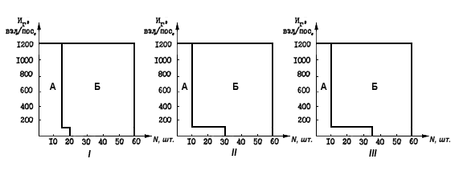
Рис. 11. Графики выбора оптимальной
схемы расстановки вертолетов I, II, III
групп при заруливании с помощью буксировщика в I и II дорожно-климатических
зонах: А - зона минимальных затрат при двухрядной схеме
расстановки вертолетов; Б - зона минимальных приведенных затрат при
трехрядной
схеме расстановки вертолетов
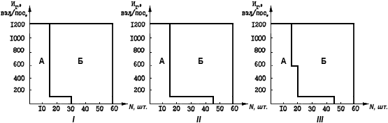
Рис. 12. Графики выбора
оптимальной схемы расстановки вертолетов I, II, III
групп при заруливании на тяге несущего винта в III, IV, V дорожно-климатических
зонах: А - зона минимальных приведенных затрат при двухрядной
схеме расстановки вертолетов; Б - зона минимальных приведенных затрат
при трехрядной схеме расстановки вертолетов
Рис. 13. График выбора
оптимальной схемы
расстановки вертолетов II и III групп при установке
с разворотом в воздухе в I, II, III, IV, V
дорожно-климатических зонах: Б - зона
минимальных приведенных затрат при трехрядной
схеме расстановки вертолетов
Рис. 14. Графики выбора
оптимальной схемы расстановки вертолетов I, II, III
групп при заруливании с помощью буксировщика в III, IV, V дорожно-климатических
зонах: А - зона минимальных приведенных затрат при двухрядной
схеме расстановки вертолетов; Б - зона минимальных приведенных затрат
при
трехрядной схеме расстановки вертолетов
Рис. 15. Графики выбора
оптимальной схемы расстановки вертолетов I, II, III групп
при заруливании на тяге несущего винта в III, IV, V дорожно-климатических
зонах:
А - зона минимальных приведенных затрат при двухрядной схеме расстановки
вертолетов; Б - зона минимальных приведенных затрат при трехрядной схеме
расстановки вертолетов
3. Порядок определения схематично представлен в следующем виде:
(рис. 9) двухрядная схема расстановки → установка при помощи буксировщика → (рис. 19) двухрядная схема расстановки;
(рис. 10) трехрядная схема расстановки → установка на тяге несущего винта → (рис. 19) двухрядная схема расстановки.
Окончательно принимается вариант, при котором совпала схема расстановки вертолетов, т.е. установка вертолетов при помощи буксировщика с двухрядной схемой их расстановки.
Пример 3. Исходные данные:
дорожно-климатическая зона - I;
группа вертолетов - II (Ми-4, Ми-8, Ка-32);
годовая интенсивность движения - 200 взл./пос.;
количество вертолетов - 15.
1. По графикам (рис. 7 и 8) определяется расположение точки пересечения. На рис. 7 точка пересечения находится в зоне 2, на рис. 8 - в зоне 1. Следовательно, в первом случае установку вертолетов следует производить на тяге несущего винта, а во втором - при помощи буксировщика.
2. По графикам (рис. 21 и 22) устанавливаем, что точка пересечения расположена в зоне А. Следовательно, схема расстановки вертолетов должна быть двухрядной. По рис. 22 принимаем трехрядную схему установки.
3. Порядок определения схематично представлен в следующем виде:
(рис. 7) двухрядная схема расстановки → установка на тяге несущего винта → (рис. 18) двухрядная схема расстановки;
(рис. 8) трехрядная схема расстановки → установка при помощи буксировщика → (рис. 18) трехрядная схема расстановки.
В данном примере совпали в первом и во втором случае схемы расстановки вертолетов, следовательно, можно принимать любую из рассмотренных схем.
Принципиальные и технологические схемы
Рис. 1. Принципиальная схема заправочного
агрегата производительностью до
500 л/мин: 1 - напорный трубопровод; 2 - кран; 3 -
сепаратор; 4 - фильтр
тонкой очистки; 5 - расходная емкость с противообледенительной
присадкой;
6 - фильтр для противообледенительной жидкости; 7 - счетно-дозирующая
установка УИАТ; 8 - присоединительный наконечник НПГ; 9 -
наконечник
нижней заправки; 10 - шланговая тележка; 11 - гидроамортизатор; 12
- насос;
13 - обратный клапан; 14 - трубопровод обратного слива
Рис. 2. Принципиальная схема
пункта налива: 1 - фильтр-сепаратор;
2 - фильтр с ТФБ; 3 - рама; 4 - счетчик топлива; 5
- бак с присадочной жидкостью; 6 -
дозатор; 7 - гидроамортизатор; 8 - площадка для ТЗ; 9 -
ТЗ; 10 - сборник
пролитого топлива
Рис. 3. Технологическая схема
упрощенной системы ЦЗС производительностью до 60 м3/ч:
I - расходный склад; II - насосно-фильтрационная станция; III - заправочный
пункт; 1 - резервуар; 2 - приемный трубопровод; 3 -
плавающее устройство; 4 - фильтр грубой
очистки; 5 - вентиль; 6 - задвижка; 7 - зачистной трубопровод;
8 - унифицированное
быстроразъемное соединение; 9 - резервуар для слива топлива; 10 -
сетчатый фильтр;
11 - предохранительный клапан; 12 - насос; 13 - фильтр
ТФ-10 с ТФ4-16к; 14 - фильтр-сепаратор
СТ-500-2м; 15 - фильтр ТФ-10 с ТФБ; 16 - гидроамортизатор ГА-2; 17
-
магистральный трубопровод; 18 - фильтр ТФ-10 с ТФБ; 19 - бачок
для противообледенительной
присадки; 20 - фильтр для противообледенительной присадки; 21 -
счетно-дозирующая
установка (УИАТ, УСМТ); 22 - раздаточный рукав; 23 - сливной
трубопровод;
24 - насос обратного слива
ПЕРЕЧЕНЬ СРЕДСТВ АВИАТОПЛИВООБЕСПЕЧЕНИЯ ВЕРТОДРОМОВ
1. Насосы 4НК9-5×1 (4НК-5×1), 5НК9-5×1 (5НК-5×1), СВН-80, СЦЛ-20-24
2. Счетчик ЛЖ-100-10
3. Счетно-дозирующая установка УИАТ-1
4. Фильтры ФГН-120, ФГН-60, ТФ-10
5. Фильтр-сепаратор СТ-500
6. Гидроамортизатор ГА-2
7. Приемосоединительная колодка ПК-90
8. Наконечник нижней заправки ННЗ-4, ННЗ-5
9. Универсальное быстроразъемное соединение УБС-65
10. Раздаточный пистолет РП-40
11. Фильтрозаправочный агрегат ФЗА-3М
12. Заправочный агрегат АПЗ-75
Содержание